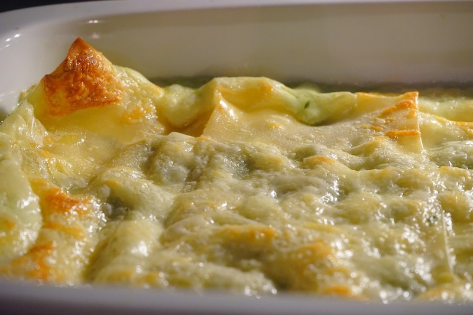

Baked Cheese Broccoli

Description
This recipe uses only three ingredients: broccoli, mayo, and cheese. You will happily be surprised by this simple recipe that actually tastes really good.
Ingredients
- Broccoli (1 bunch)
- Mayonnaise (2 tbsp) - Choose a mayo without sugar
- Cheddar cheese (enough to cover the top of broccoli)
Steps
- Cut the broccoli florets into bite sizes.
- Boil the broccoli to your preferred tenderness (ideal time to cook is 2 to 3 minutes).
- Drain and remove excess water from the boiled broccoli florets.
- Transfer the broccoli florets in an oven safe dish.
- Spread mayonnaise on top of the broccoli florets.
- Put cheddar cheese over the mayonnaise covered broccoli florets.
- Broil High for 5 to 7 minutes or bake 10 minutes in 400F until the cheese topping turns golden brown.
- Optionally, splash a little bit of hot sauce if you like spicy.
- Enjoy.